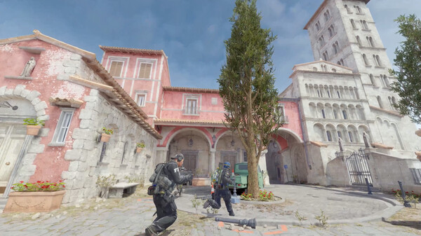
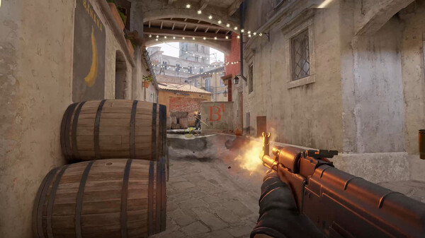
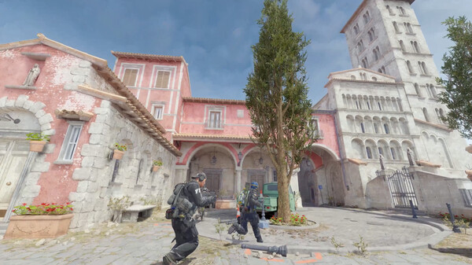
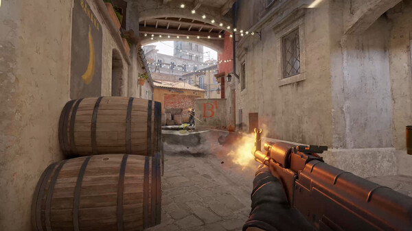

Counter-Strike: Global Offensive (CS:GO)
CS:GO is een team-based multiplayer first-person shooter ontwikkeld door Valve en Hidden Path. Het is de vierde game in de Counter-Strike franchise en is de opvolger van Counter-Strike: Source. CS:GO werd uitgebracht voor Windows, macOS, Linux, PlayStation 3, and Xbox 360 in augustus 2012.
First-person shooter
Multiplayer
Competitive
Tactical
Rating: ****
Multiplayer
Genre: First-person shooter
Ontwikkelaar: Valve
Uitgavedatum: 21 augustus 2012
Afbeelding(en)
 



Systeemeisen
- Besturingssysteem: Windows 7/8/10
- Processor: Intel Core 2 Duo E6750 or AMD Athlon 64 X2 5600+
- Geheugen: 2 GB RAM
- Grafische kaart: NVIDIA GeForce 8600 or AMD Radeon HD 6670
- Opslagruimte: 15 GB
Recensies
"CS:GO is een intense en competitieve shooter die je skills op de proef zal stellen." - IGN
"Een van de beste esports games ter wereld." - Gamespot
"CS:GO is een klassieker die nog steeds relevant is." - Destructoid